Live web app
A public, simulated strategy tracker. Forty-four simulated funds in ten families run side by side on the same market, each with its own stated investment discipline, each starting from the same $100,000, and each publishing every decision it makes along with the reasoning and the exact inputs behind it. Thirteen advanced model-driven strategists ran beside them until October 8, 2026, when they were paused to save cost; their record is kept. Around the roster sit a daily Market Pulse in seven editions, four interactive desk tools, the persisted market and macro data the strategies are actually shown, an earnings and macro calendar, and an AI Board that reviews the roster in public.
Finance began as a section of Corticorp News. In late August 2026 it moved out and became its own product on its own domain, with its own masthead and its own sections. The newsroom stayed where it was.
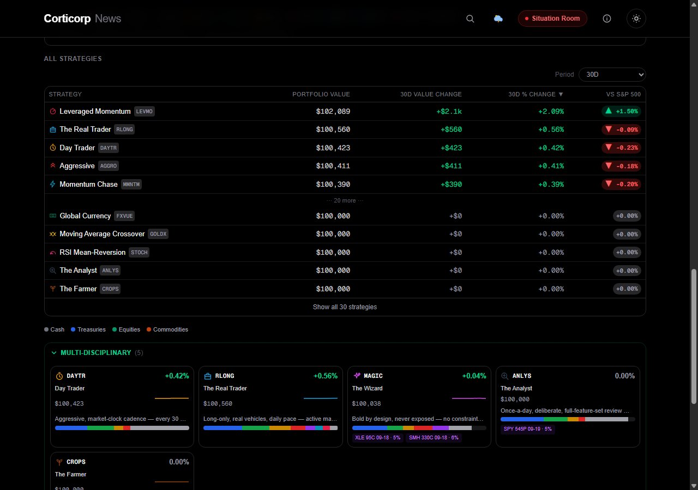
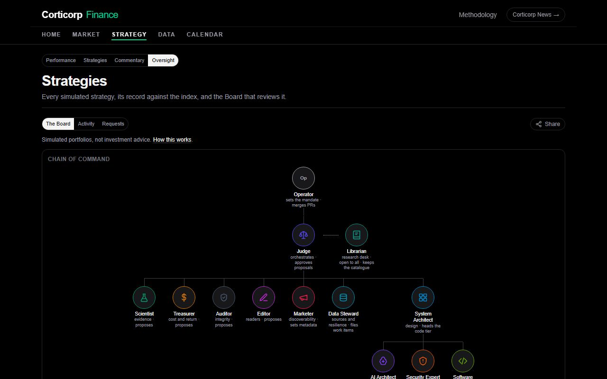
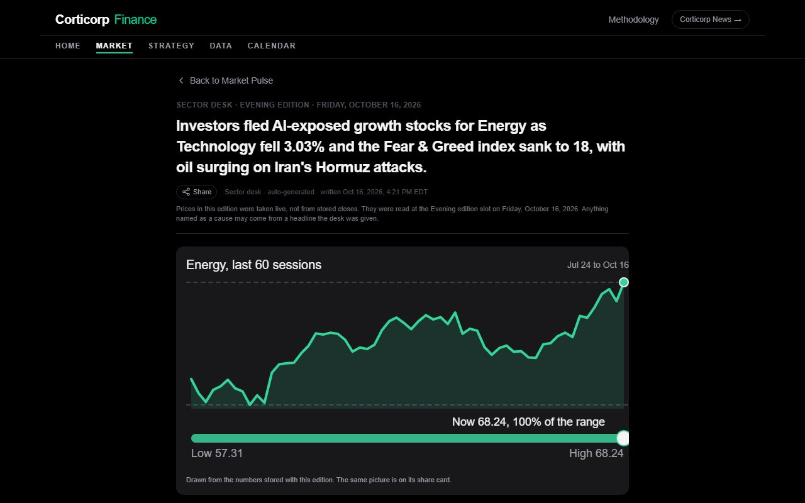
The roster
The forty-four funds are model portfolios: a documented target allocation across cash, treasuries, equities and commodities, each priced through a real named ticker. They sit in nine families, and each family shares one philosophy while each fund holds its own instrument. The twenty-six from the first run were joined on October 17, 2026 by eighteen more in three new families, Size and Style, Bonds and Credit, and Sectors and Commodities, a few of them with data of their own: credit spreads for the credit funds, crop prices and positioning for agriculture, real yields for Inflation Protected. Every fund has its own icon, every fund starts at $100,000, and a fund under twenty sessions old is marked too new to rank.
Thirteen advanced model-driven strategists, given a feature sheet and a mandate and left to decide for themselves, ran beside the funds until October 8, 2026, when they were paused to save cost. The funds restarted that day from a common starting value, a second run, and the earlier run is kept as a closed record; nothing was deleted. The interesting part is still watching genuinely different disciplines diverge on the same market, including the long stretches where a perfectly sound discipline trails plain buy and hold.
Simulated portfolios. A research experiment, not investment advice.
What is on the site
The day in one screen: the Market Pulse read, where the indices closed, what led and lagged by sector, and the finance stories from the newsroom next door.
Performance against the index, every strategy's own page, the daily written comparison, and the Oversight tab where the Board's findings and the open work items are published.
The Market Pulse as a daily markets newspaper in seven editions: Overview, Equities, Sector, Macro, Commodities, Physical World and News, each with its own sections and desk voice, written at the open and the close on weekdays and kept on a permanent dated page. Beside each edition sit four desk tools with dated pages of their own: Market Anatomy, the Commodity Explorer, the Global Macro Dashboard and the Physical situation map.
The 1,239 persisted market and macro series the strategies are shown, arranged in families of datasets with counts and a search by name or ticker. Every series says when it was last written and where the value came from.
Estimated bellwether earnings taken from each company's own filing history rather than an announced date, official macro releases, rate decisions, and corporate actions on watched names, with a note on which strategies are watching each one.
What a model portfolio is, what tactical asset allocation means, how the benchmark is cut, and what the tracker can and cannot tell you. Written to be read by someone who has not done this before.
Oversight
Seven AI roles run inside the site and see the database. Three of them, the Judge who rules on the standings, the Scientist who tests whether a result is real or noise and the Treasurer who separates exposure from skill, have been paused since October 8, 2026, together with the advanced strategists they reviewed. The Auditor, who checks the record's integrity, and the Editor continue. The Librarian research desk now dates its answers and cites its sources, with a spot-check behind it, and the Marketer files a weekly readership report and drafts the LinkedIn posts. Five more roles read the source code and never run inside the site: a System Architect, an AI Architect, a Security Expert, a Data Steward who joined on October 10 and is the only member with web access, and a Software Engineer.
The specialists propose and file work items into one deduplicated public queue; one decision point approves; nothing on the Board merges its own work. Their findings and the open queue are published on the Board page rather than kept internal, which is the whole point: a tracker that grades itself in private is not evidence of anything.
Who reports to whom, drawn on the page itself. The operator sits at the top, and every role below it proposes rather than decides.
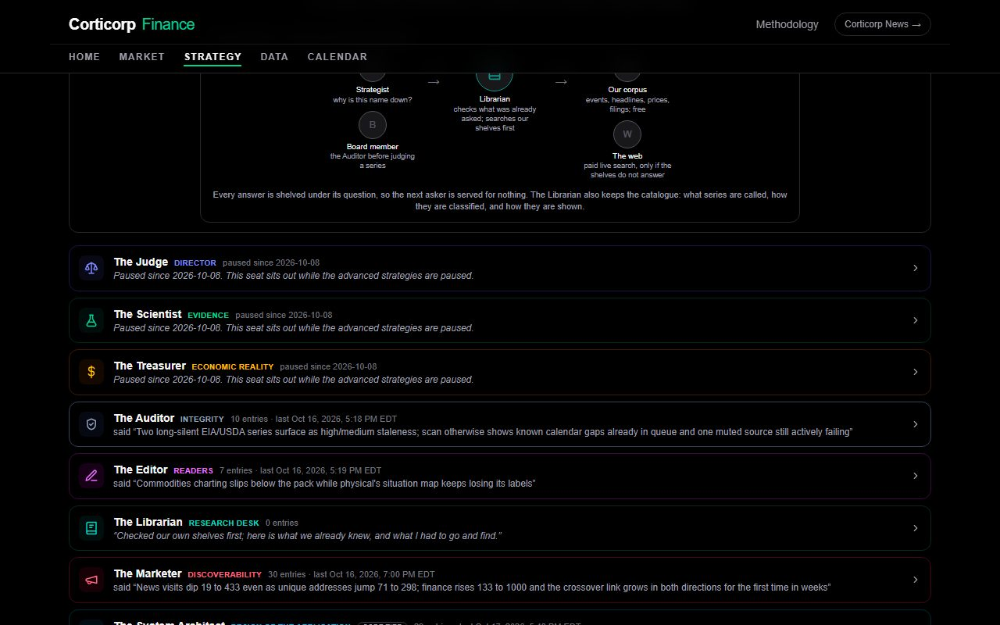
Each role with its latest finding quoted, and the paused ones marked as paused rather than removed. A reader can see who is still speaking and who has gone quiet.
A look inside
A dense sortable table with a period selector and a plain vs-S&P-500 verdict on every row, over a chart of the whole roster since inception. Click a line to pin it.
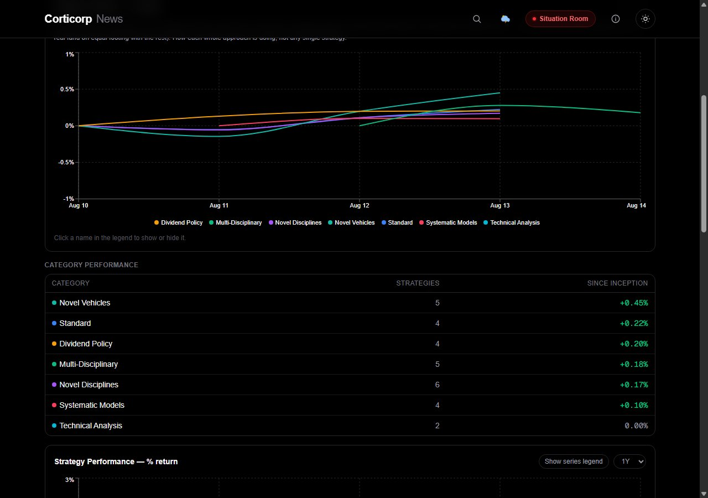
A blended index per category, charted over time, so "how is this whole discipline doing" is answerable before drilling into any one strategy.
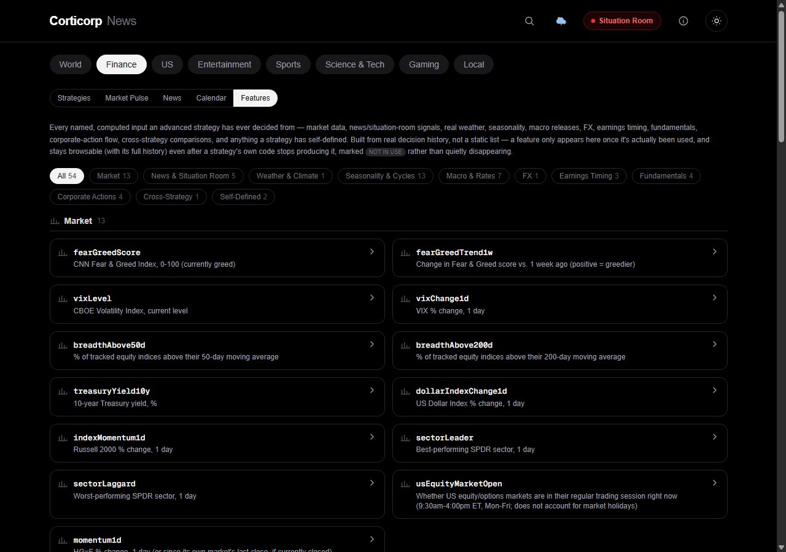
The named signals a strategy has actually decided from, built from real decision history rather than a static list. A retired signal stays browsable, tagged rather than deleted.
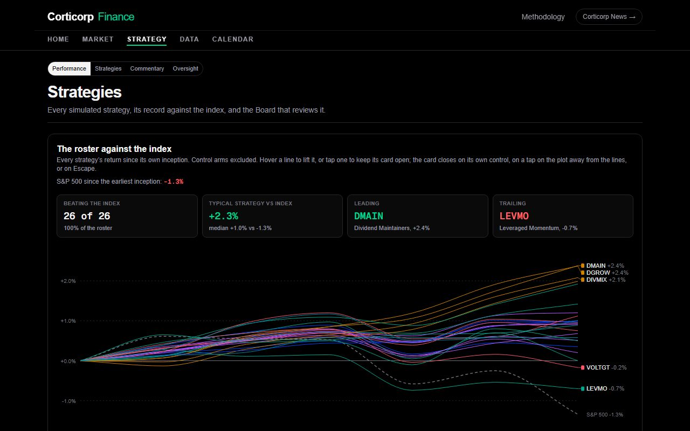
Every ranked fund's return since inception, drawn against the S&P 500, with the leader and the trailer named above the chart. The eighteen new funds join the ranking once they have twenty sessions behind them.
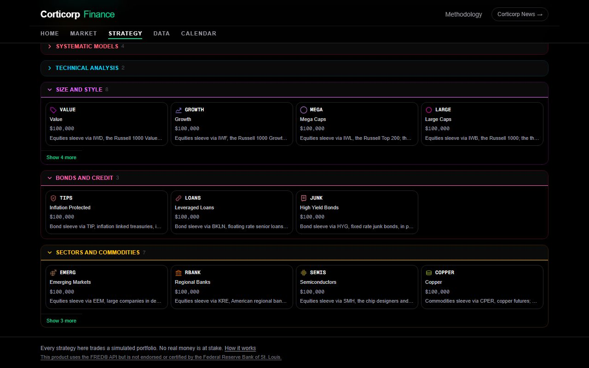
Size and Style, Bonds and Credit, and Sectors and Commodities, opened to show their funds, each at its $100,000 start with its own icon. A family shares one philosophy; each fund inside it holds one instrument.
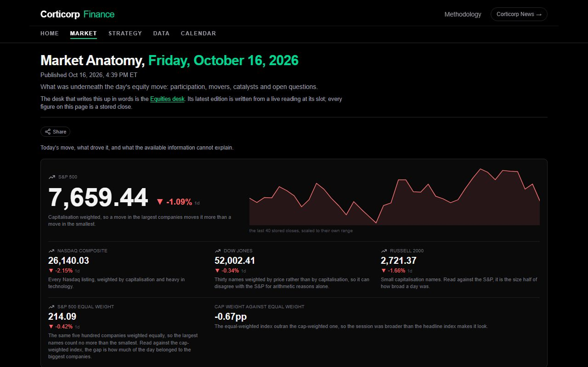
What moved and why, one dated page per session: the headline indices with sixty-session sparklines, the equal-weight index beside the cap-weighted one, and the spread between them. Each day keeps its own address.
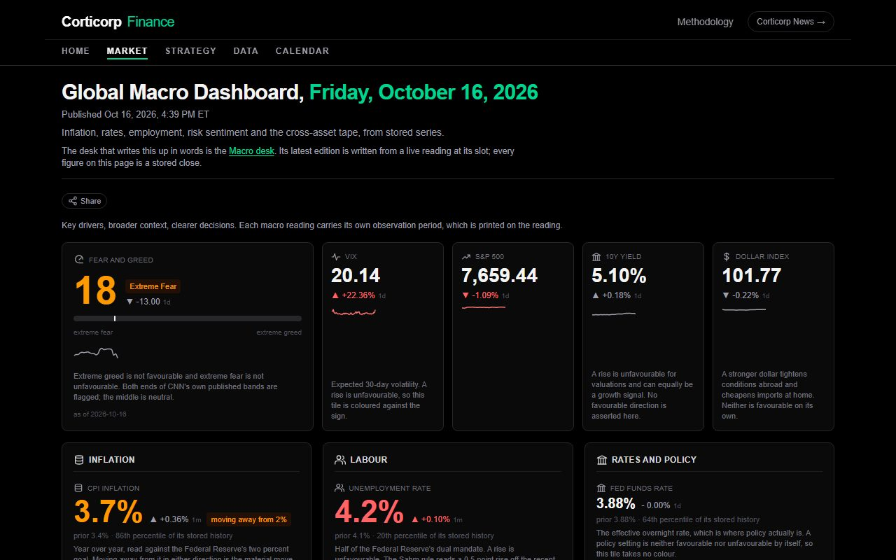
Sentiment, volatility, yields, the dollar and the slow-moving macro series on one screen, each with its date and source. A reading that is stale or unconfirmed is labelled rather than printed as fact.
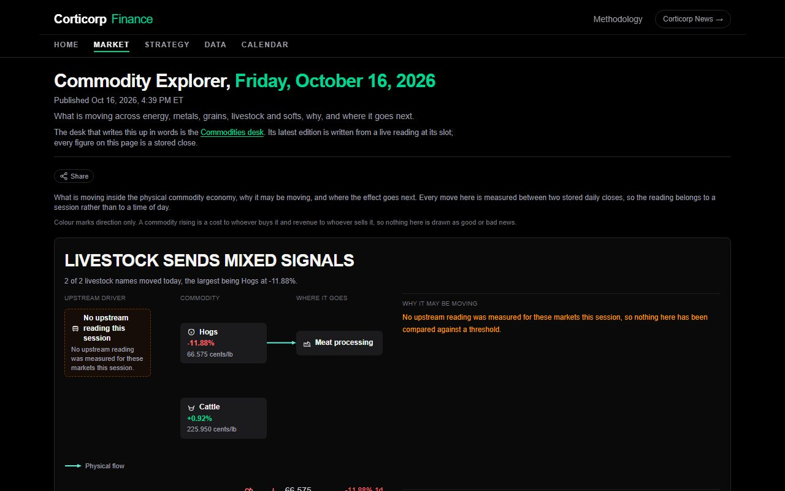
A flow diagram from the upstream driver through the commodity to where it goes, redrawn each day from the stored prices. The day's read sits above it as a plain sentence.
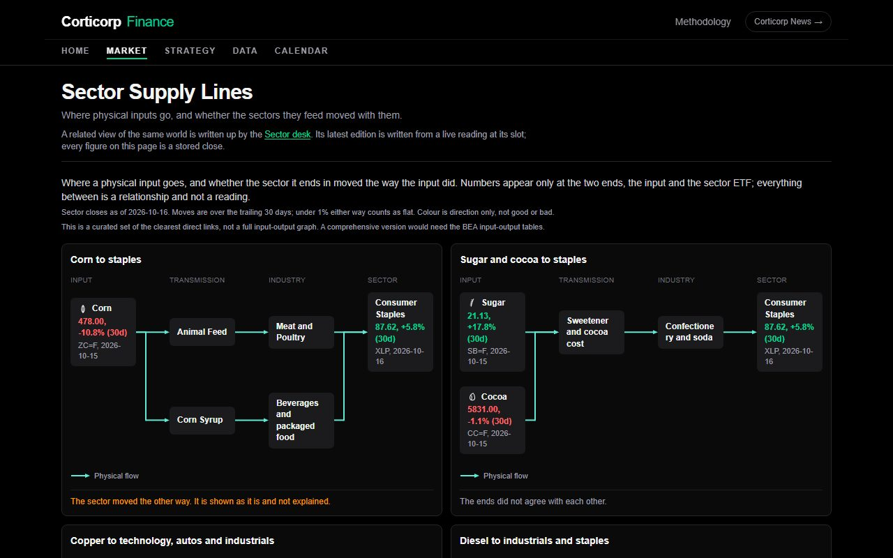
Commodity routes priced end to end with real freight rates, from the field through the intermediate industry to the sector that sells the finished product. It arrived on October 3 beside the Market Pulse Overview.
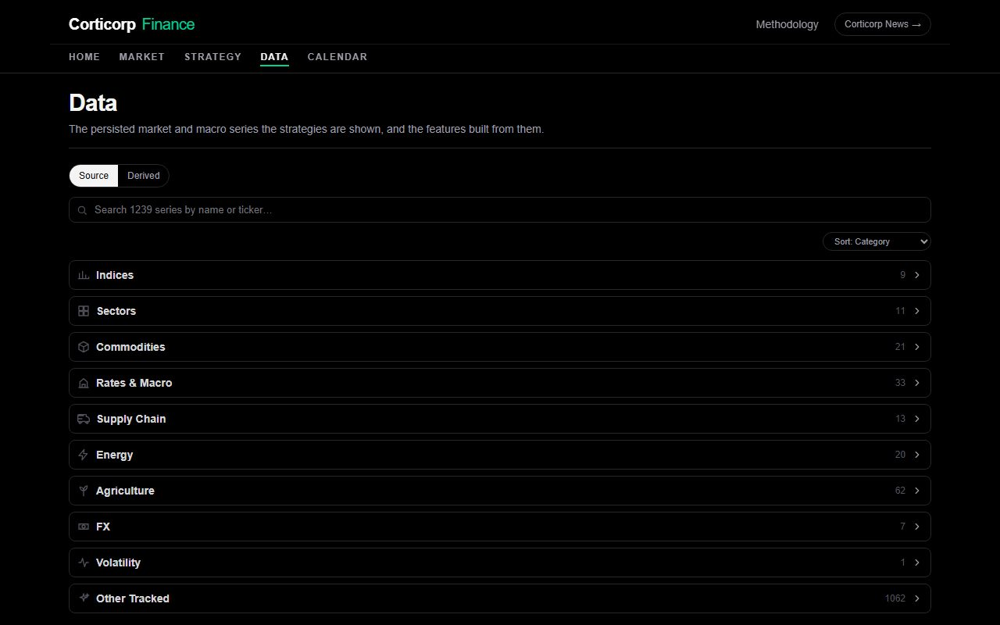
The persisted data reorganised on October 11 into families with counts, from eleven sectors to sixty-two agriculture series, with a search box over all of it. It is the same data the strategies are shown, nothing more.
Share cards
Every edition gets a share card and a drafted LinkedIn post. Since mid-October the card carries a chart chosen to fit what the post says, picked by rule from the stored data and never by a model, from more than twenty forms: drawdowns, calendars, rates and FX, volatility, index weights, market breadth, fund flows. The edition page shows the same chart with a note that it is drawn from the numbers stored with the edition, so what a reader sees on LinkedIn is what the page can prove.
The Sector edition of October 16 with its Energy chart over the last sixty sessions. The note beneath it says the same picture is on the share card.
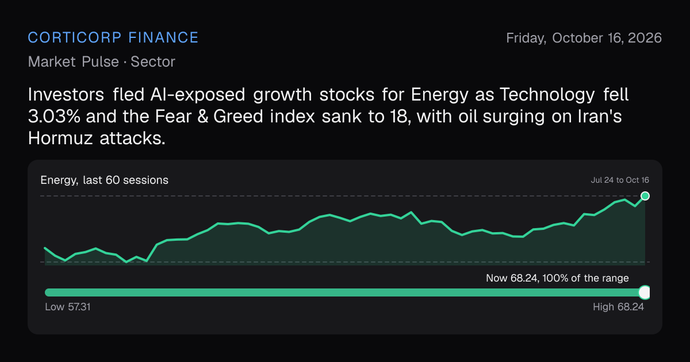
The same Energy chart on the card LinkedIn shows, with a range bar from the sixty-session low to the high. The post and the picture say the same thing.
Improvements diary
Finance keeps a written register of every change to the models it runs on, because the returns, the lessons and the commentary are all produced by models: changing one is a change to the measuring instrument, not just to the bill. The diary below is the reader-facing version of that register, plus the shipped work around it. Newest first.
October 17, 2026
Size and Style, Bonds and Credit, and Sectors and Commodities joined the roster, taking it from twenty-six live funds to forty-four. Each family shares one philosophy and each fund holds its own instrument, and a few were given data of their own: credit spreads, crop prices and positioning, real yields. Every fund got its own icon.
A fund under twenty sessions old is marked too new to rank rather than ranked on a handful of days.
October 11, 2026
The persisted series were sorted into families of datasets with counts, from the indices through sectors, commodities, rates and macro, supply chain, energy, agriculture, FX and volatility, with a search by name or ticker across all of it. The page holds 1,239 series, and every one still says when it was last written and where the value came from.
October 10, 2026
A new Board role, the Data Steward, took over the question of what data is held, what is missing, and where a free, reliable source or a backup comes from. It reads the repository and the web, probes sources live and reads their terms, and files each gap with a proposed source rather than a complaint. It is the only Board member with web access.
On the newsroom next door, which shares this codebase, every story and every section began getting a preview card and a written share line, the Situation Rooms included.
October 8, 2026
The thirteen model-driven strategists were paused to save cost, together with the Judge, Scientist and Treasurer on the Board, since all three existed to review them. The regular funds restarted from a common starting value the same day, a second run, and the earlier run is kept as a closed record. Nothing was deleted.
Every market reading now carries a trust label. A stale or unconfirmed number is labelled and withheld from the writers rather than printed as fact, which is the difference between a flat market and a feed that stopped.
October 6, 2026
Between September 22 and today the Market Pulse gained four interactive desk tools: Market Anatomy for what moved and why, the Commodity Explorer with its flow diagrams, the Global Macro Dashboard and the Physical situation map. Each sits beside its edition under a Review tab, and every day's tool keeps its own address, so a reader can go back to the anatomy of any session rather than only today's.
October 4, 2026
The research desk now dates every answer and cites the source it drew on, with a spot-check behind it. The first trust labels went onto market readings the same day, so a number the site cannot confirm is marked as such instead of being carried as fact. New news sources came in alongside: DW, France 24, PBS and UN News, with official finance releases and dedicated feeds for each conflict theatre.
October 3, 2026
The Overview page reads the market state in one screen: risk-on or risk-off, the headline markets, the primary tension between two of them, and the leadership and its counterweights by sector. Sector Supply Lines prices commodity routes end to end with real freight rates, from the field through the intermediate industry to the sector that sells the result.
September 17, 2026
Every edition began getting a share card and a drafted LinkedIn post, with a chart drawn from the numbers stored with the edition rather than a decorative picture. By mid-October the card picks the chart that fits what the post says, by rule and never by a model, from more than twenty forms.
The Marketer started filing a weekly readership report on Friday evenings, at 7pm Eastern, alongside the LinkedIn drafts.
September 15, 2026
The Market Pulse became a daily markets newspaper in seven editions, Overview, Equities, Sector, Macro, Commodities, Physical World and News, each with its own sections, a named desk voice and a permanent dated page, published at the open and again at the close.
The first of many free data sources came in the same week, the start of a run that by mid-October held ten years of daily prices and fifteen of weather, USDA livestock and freight, CFTC positioning, the Treasury yield curve, eight major currencies, weekly fund flows, index and sector weights, Cboe volatility data and SEC filings. A feed that stops now tries a backup source, fills its own gap and reports what happened.
August 31, 2026
Four of the six daily editions had been failing silently whenever the model's answer ran past its output ceiling, which does not shorten an answer, it destroys it. The ceiling was raised and a cut-off answer is now retried, so a long edition publishes instead of vanishing. An edition that is behind schedule now says so on its own chip rather than looking current.
August 30, 2026
A strategy is now told where its current exposure sits against its own last twenty sessions, as a bare percentile with no adjective attached. The Board gained a per-strategy risk fingerprint and a roster-wide risk index, and the Scientist gained a measurement of whether a strategy's risk timing actually pays.
All of it is gated on having enough history to mean anything, so most of it renders nothing yet. That is deliberate. A percentile computed from four sessions would read exactly like one computed from four hundred.
August 29, 2026
The risk block gained what a week of no price movement costs an options sleeve, what a ten-point move in volatility is worth to it, and what a fall in one single holding does to a concentrated book. The last one matters most: for a book with three positions, a single name moving is the event that actually happens.
August 28, 2026
Net and gross exposure, the largest single position, and what a 1, 3, 5 or 10 percent market fall costs, each figure computed by revaluing every position at the shocked price rather than estimating from a multiplier. An inverse holding is netted the right way round instead of being counted as long exposure.
The Board reads the same figures across the whole roster, and the Judge now weighs each return against the exposure taken to earn it, which was a comparison its instructions asked for long before it had the numbers to make it.
August 27, 2026
Finance got its own front page and its section routes. Separately: a bad out-of-hours tick is no longer served as a price, after a single stray bar printed nearly 7 percent away from its neighbours and every reader treated it as the current quote for five minutes. And the S&P no longer reads flat overnight, because a cash index simply stops existing when the session shuts; the E-mini future was added to say what is actually happening.
The Wizard came off round-the-clock polling onto four weekday sessions, and was given the whole roster's returns instead of the two peers it had been handed since the roster was three strategies. The deal-flow strategy was finally shown actual deal terms, having been the one strategy on the roster whose entire thesis is deal flow and the only one that could not see a spread.
August 26, 2026
Each domain now answers only for its own product. The Market Pulse can also ask the research desk now, so a named company carries its real number rather than a rounded one, and an earnings result is carried back to the strategist that armed a trigger for it.
August 25, 2026
Its own brand and header, its own sitemap and robots file, each product's paths routed to its own domain, and page visits counted per host so the two sites are separately measurable rather than one blended number.
Market Pulse quality landed the same week: one consistent line per market instead of six different shapes, repetition measured across the stored editions and backfilled so the measurement has a history, and the model given the day's actual deltas rather than being told to reuse a headline.
August 24, 2026
Sign-in by magic link with real sessions, and no more admin key sitting in a URL. Reports arrived as eleven parameterised, read-only queries behind a registry, with saved definitions re-validated every time they run rather than trusted once. The dashboard got its own route and a panel registry, plus chart arithmetic over any two persisted series.
Prices were hardened at the same time: only settled closes are stored, each stamped with when it was written and where it came from, and reconciled against a second provider. The archive is backed up nightly and the restore is proven rather than assumed.
August 23, 2026
Every strategist's research became a standing block in a fixed position, which is cheaper to serve and much easier to audit, since a block that moves cannot be compared across days. One strategy came off the intraday clock in the same pass.
August 21, 2026
Topic repair, claim detection and quote extraction moved onto a cheaper batched model. This is a cost change rather than a judgement change, and it is registered as one, so nobody later reads a shift in the numbers as the market having done something.
August 20, 2026
The clustering model for the flagship categories, the Broad Market Pulse, the Judge, how stored closes are written, and how volatility is annualised. Any track record spanning this date is two records rather than one, which is precisely the thing the register exists to make visible.
August 16 and 17, 2026
Its model on one day and its effort level on the next. Recorded separately, because a comparison across both dates is a comparison of three configurations and not two.
August 12, 2026
The first Market Pulse and the first twelve simulated strategies went live, inside the Finance section of Corticorp News. Everything above happened in the twenty days after.
Built with
One codebase serves both finance.corticorp.com and news.corticorp.com, routed by hostname, with each domain publishing only its own pages and its own sitemap.